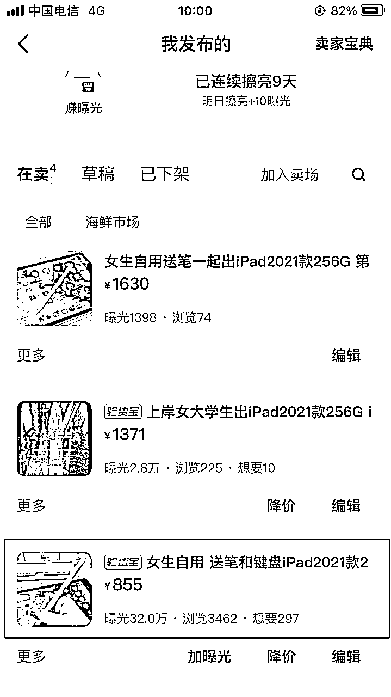
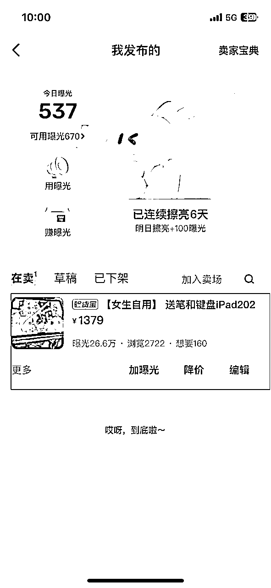
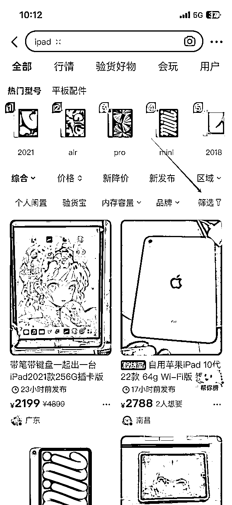
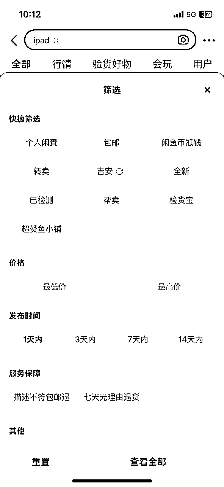

来源：https://wm1881zs6s.feishu.cn/docx/GzA5dil24obsNVxTqRvcUrOTnJc
圈友们好，我是大臣。见字如面。
先做个简单的自我介绍，我是00后，没做过项目的小白，目前还在为找个适合自己的项目，达到稳定月入1W而努力。
这次航海我同时报名了闲鱼和TEMU两条船，但是在报名结束的前一天，我怕同时做两个项目会分散我的精力，所以就做了一个减法，下了闲鱼的船，专心跑TEMU，希望可以跑通这个项目，让自己的收入变得稳定。
在航海开始前半个月我想先拿个项目练练手，然后就在生财看到智慧哥的《想先赚到第一块钱，不妨运营一个闲鱼 iPad 数码店铺》这篇帖子后链接了他的货源下海实操。
下面我会分享我这半个月的实操经验，全程无保留，希望对想做闲鱼的小白以及第一次参加闲鱼航海的圈友们有点帮助。
做了半个月其实真正赚钱的时候就3天，原因就是我做对了下面几点，导致曝光增长贼高，两个号都是老号，第一号爆了30W，第二个号我如法炮制，也跑了26.6W。


卖东西，你得了解客户的喜好！
经过这几天的实测下来，在买iPad这方面，闲鱼上的客户是非常讨厌二手贩子的！(可能他们是被坑怕了)。
况且我们刚刚开始卖iPad，不比在闲鱼深耕了很多年的iPad博主，有大量的好评数据做背书，所以我们很难和用户建立起信任，这会大大降低我们的成交率。
所以在账号注册好了之后，先别急着上架iPad，先把咱们自己包装成个人卖家，可以根据你的账号人设，先卖点个人用品，比如我这个账号是女孩子，那我就拍点化妆品的图片挂上去卖，然后找朋友买下，先刷个一单，毕竟用户看你主页就卖一个iPad和看你主页还卖过其他对应个人属性的闲置，给他的真实感完全不一样。
赚曝光，你得了解客户的喜好！
单刷完了，就可以开始上架iPad了，不要一次上架一堆，看上去就很假，我们要做的就是用下面的方法打爆单挑链接，如果没爆怎么办？那就下架重新发。
在曝光阶段，用户能看到的东西如下图
所以我们宝贝的发布要围绕着这几段来做文章
直接找同行的异常值文案，改成适合自己的文案。
由于咱们的账号是个人，那你手上为什么会有这么多iPad，这个问题就要给出一个合理的解释，比如我们寝室考研都上岸了，室友还有几台我一起帮忙出了就很合理。
下面是找异常值文案的方法：


找同行异常值宝贝的时候，关注一下它的主图是怎么展示的，它能爆一定不是只有文案这一个因素，看我分享的曝光图，细心的圈友们会发现我两个图中都是iPad+电容笔的组合，这就是我观察同行爆款分析出的一个爆点。
宝贝的所有展示图有条件的小伙伴们我都推荐自己拍，不要直接拿同行的，手上没有iPad的话可以用至尊宝插件去下载淘宝上的卖家秀。
这里告诉大家一个小技巧，不要直接搜iPad，去搜iPad保护壳，那里面的卖家秀都拍的挺好看的。
至于小红书上的宝贝图也不是不行，但是最好做下筛选，曝光太高的就别用了，多数都是同行用过的，效果不好。
验货宝一定要勾上，增强用户信任感，勾上他相当于你这个宝贝有一种权威认证的感觉，反正客户买的时候大概率是不会走验货宝的，就算要走，咱们卖的都是能过验货宝的原装机不用怕，只要和他说明白验货宝的流程就行。
下面是我的文案：
走验货宝的话，验的没问题费用你是那边出，有问题的话费用我这边出，然后大概要一个礼拜时间。
很多用户听到走验货宝要等一个礼拜，想验的心一下就死了。
价格我建议不要参考同行，这是我自己想到的办法，今天无偿分享给大家。
核心一句话：你标什么价就吸引愿意付什么价的客户。
首先你要定好一个你自己的主推款，比如我主推的是iPad7代，卖价大概是1400左右，然后你看你的爆款文案是推的哪款，我这里写的是2021，那你的卖价就要比全新的2021要便宜，最好是能比同行的还要低，比如同行卖1600，你就卖1500，但是卖价一定要高于你主推款的卖价，这会影响转化，至于为什么这样设计，我放在了聊天成交部分说明。
这个就没啥好说的了，想要人数低于50之前，打开金币折扣，超过了50可以关掉，至于降价这个玩法我没试过。
最最最重要的：问用户买iPad的用途是什么？
由于我文案推的是21款的，很多用户就会来问21款多少钱，但实际上他们并不知道他们的需求是否更低级的配置也能满足，所以这时候你就得问他用途是什么，等他告诉你之后，你判断你的主推款能不能满足，如果能，就和他说21款配置超了，你推荐他买19款，更有性价比，还能省钱，他根本用不到21款那么高的配置。
还记得咱们刚才的定价吗，其实大多数客户会点想要来咨询，就表示标价在他的预算内，那你这时候如果和他说，你的需求都不用超预算，而且还有剩余就能满足，会给他们一种超预期的感觉，更容易转化，而且这里面也会把不符合预算的用户给筛选掉。
还记得我32W曝光的那个帖子吗，标价855，聊客户的时候差点没把我累死，他们预算真的就是800多，你多说一点就超预算了，无法接受，所以筛选客户真的很有必要。
下面是聊客户时的三个要点，大家可以围绕着这三个点去想怎么和客户聊
我的分享到这里就结束了，这是我第一次写帖子，有很多不足之处，如果对圈友们有帮助，那我真的非常开心，祝大家早日找到适合自己的项目。
最后我想感谢咱们生财和生财的圈友们，让我看到这么多优质的赚钱内容，也得感谢一下智慧哥，帮我解决了后端问题，不然自己踩坑找货源真的很麻烦。